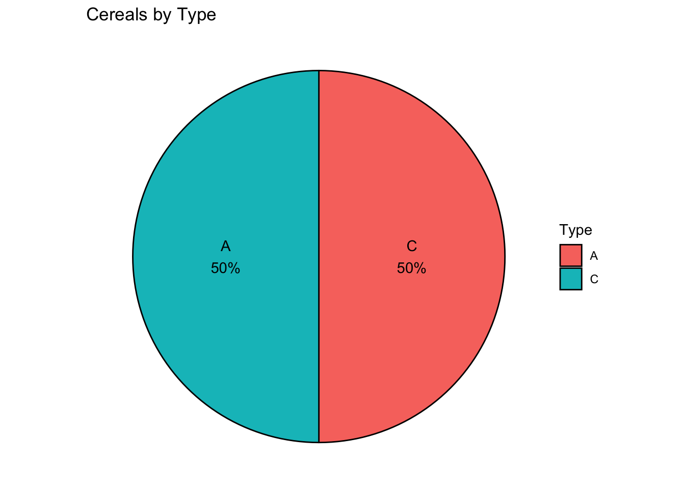
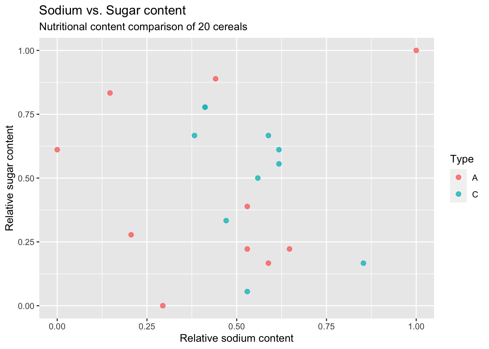

library(tidyverse)
library(ggplot2)
library(scales)
knitr::opts_chunk$set(echo = TRUE, warning=FALSE, message=FALSE)Challenge 5
challenge_5
Prasann Desai
cereal
Introduction to Visualization
Challenge Overview
Today’s challenge is to:
- read in a data set, and describe the data set using both words and any supporting information (e.g., tables, etc)
- tidy data (as needed, including sanity checks)
- mutate variables as needed (including sanity checks)
- create at least two univariate visualizations
- try to make them “publication” ready
- Explain why you choose the specific graph type
- Create at least one bivariate visualization
- try to make them “publication” ready
- Explain why you choose the specific graph type
R Graph Gallery is a good starting point for thinking about what information is conveyed in standard graph types, and includes example R code.
(be sure to only include the category tags for the data you use!)
Read in data
Read in one (or more) of the following datasets, using the correct R package and command.
- cereal.csv ⭐
- Total_cost_for_top_15_pathogens_2018.xlsx ⭐
- Australian Marriage ⭐⭐
- AB_NYC_2019.csv ⭐⭐⭐
- StateCounty2012.xls ⭐⭐⭐
- Public School Characteristics ⭐⭐⭐⭐
- USA Households ⭐⭐⭐⭐⭐
# Function call to read a csv file
cereal_df <- read_csv("_data/cereal.csv")# Preview of the dataset
cereal_df# A tibble: 20 × 4
Cereal Sodium Sugar Type
<chr> <dbl> <dbl> <chr>
1 Frosted Mini Wheats 0 11 A
2 Raisin Bran 340 18 A
3 All Bran 70 5 A
4 Apple Jacks 140 14 C
5 Captain Crunch 200 12 C
6 Cheerios 180 1 C
7 Cinnamon Toast Crunch 210 10 C
8 Crackling Oat Bran 150 16 A
9 Fiber One 100 0 A
10 Frosted Flakes 130 12 C
11 Froot Loops 140 14 C
12 Honey Bunches of Oats 180 7 A
13 Honey Nut Cheerios 190 9 C
14 Life 160 6 C
15 Rice Krispies 290 3 C
16 Honey Smacks 50 15 A
17 Special K 220 4 A
18 Wheaties 180 4 A
19 Corn Flakes 200 3 A
20 Honeycomb 210 11 C Briefly describe the data
Response:
From the above output, we can see that the dataset contains mainly the nutritional information (Sodium and Sugar content) + category/type about 20 cereal products. Based on the column names and general knowledge, it is safe to assume that the unit of measurement for Sodium Content is milligrams and for Sugar it is grams.
Tidy Data (as needed)
Is your data already tidy, or is there work to be done? Be sure to anticipate your end result to provide a sanity check, and document your work here.
Response: It appears to me that the data is already tidy. (Each variable has its own column, Each observation has its own row and Each value is in its own cell)
# Sanity check for duplicate responses
n_distinct(cereal_df$Cereal)[1] 20# Check to see if the category wise totals add up to 20
table(cereal_df$Type)
A C
10 10 Are there any variables that require mutation to be usable in your analysis stream? For example, do you need to calculate new values in order to graph them? Can string values be represented numerically? Do you need to turn any variables into factors and reorder for ease of graphics and visualization?
Document your work here.
# Normalizing the 'Sodium' and 'Sugar' columns to a scale of 0-1. It will be helpful with comparative Bivariate analysis/visualization.
cereal_df <- mutate(cereal_df, sodium_norm = rescale(Sodium), sugar_norm = rescale(Sugar))
cereal_df# A tibble: 20 × 6
Cereal Sodium Sugar Type sodium_norm sugar_norm
<chr> <dbl> <dbl> <chr> <dbl> <dbl>
1 Frosted Mini Wheats 0 11 A 0 0.611
2 Raisin Bran 340 18 A 1 1
3 All Bran 70 5 A 0.206 0.278
4 Apple Jacks 140 14 C 0.412 0.778
5 Captain Crunch 200 12 C 0.588 0.667
6 Cheerios 180 1 C 0.529 0.0556
7 Cinnamon Toast Crunch 210 10 C 0.618 0.556
8 Crackling Oat Bran 150 16 A 0.441 0.889
9 Fiber One 100 0 A 0.294 0
10 Frosted Flakes 130 12 C 0.382 0.667
11 Froot Loops 140 14 C 0.412 0.778
12 Honey Bunches of Oats 180 7 A 0.529 0.389
13 Honey Nut Cheerios 190 9 C 0.559 0.5
14 Life 160 6 C 0.471 0.333
15 Rice Krispies 290 3 C 0.853 0.167
16 Honey Smacks 50 15 A 0.147 0.833
17 Special K 220 4 A 0.647 0.222
18 Wheaties 180 4 A 0.529 0.222
19 Corn Flakes 200 3 A 0.588 0.167
20 Honeycomb 210 11 C 0.618 0.611 Univariate Visualizations
# Building a temp df suitable for creating a pie chart
cereals_by_type <- count(cereal_df, Type) %>% mutate(prop = round(n*100/sum(n),1), lab.ypos = cumsum(prop) - 0.5*prop)
cereals_by_type$label <- paste0(cereals_by_type$Type, "\n", round(cereals_by_type$prop), "%")
cereals_by_type# A tibble: 2 × 5
Type n prop lab.ypos label
<chr> <int> <dbl> <dbl> <chr>
1 A 10 50 25 "A\n50%"
2 C 10 50 75 "C\n50%"# Creating a pie chart
ggplot(cereals_by_type,
aes(x = "",
y = prop,
fill = Type)) +
geom_bar(width = 1,
stat = "identity",
color = "black") +
geom_text(aes(y = lab.ypos, label = label),
color = "black") +
coord_polar("y",
start = 0,
direction = -1
) +
theme_void() +
labs(title = "Cereals by Type")
Bivariate Visualization(s)
# Building a scatter plot of sodium_norm and sugar_norm
ggplot(cereal_df,
aes(x = sodium_norm,
y = sugar_norm,
col = Type
)) +
geom_point(size = 2,
alpha = 0.8
) +
labs(x = "Relative sodium content",
y = "Relative sugar content",
title = "Sodium vs. Sugar content",
subtitle = "Nutritional content comparison of 20 cereals")
Any additional comments?